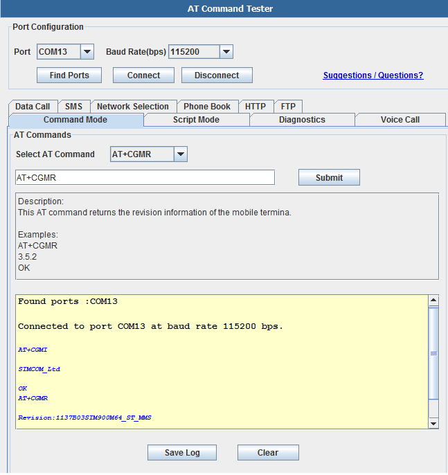
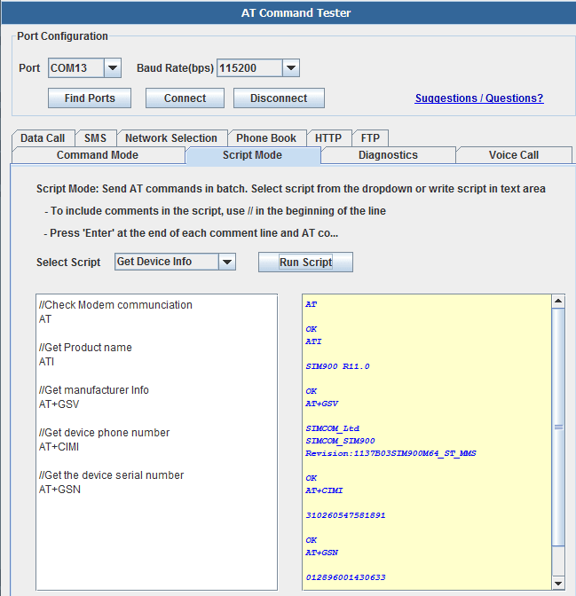
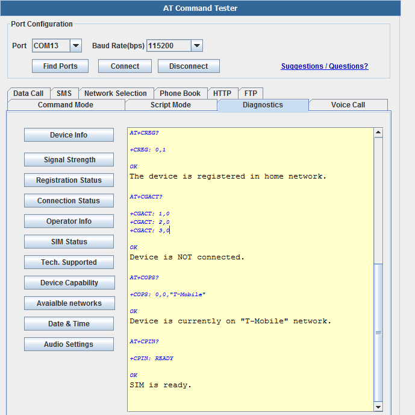
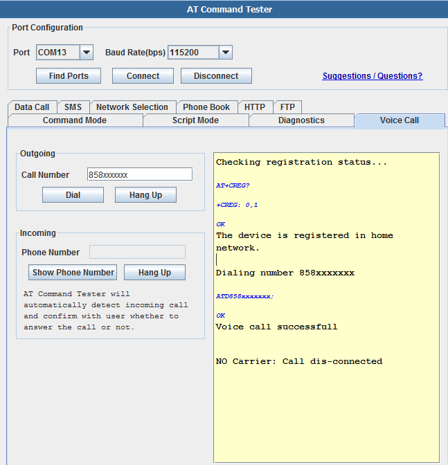
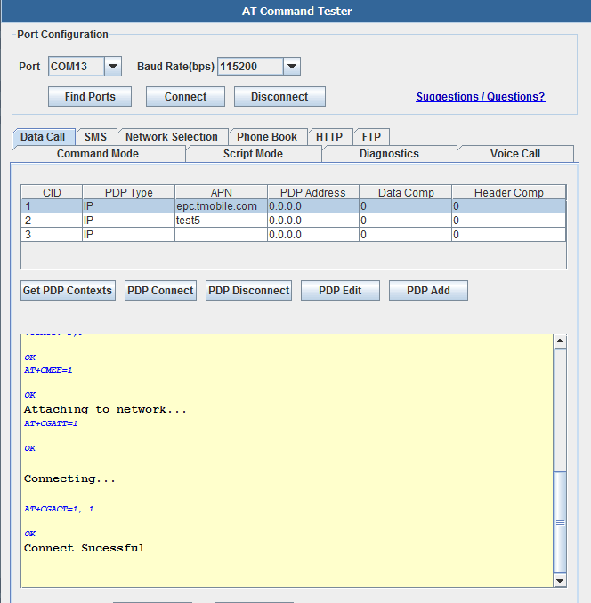
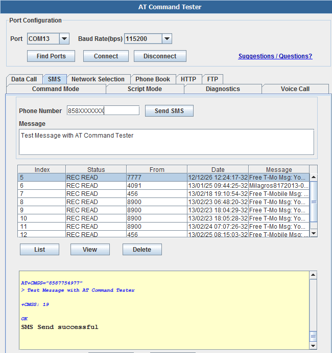
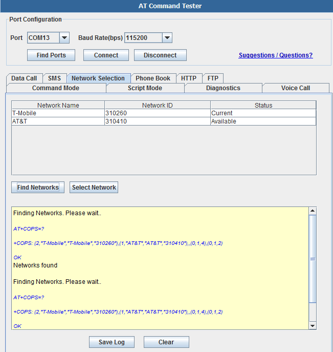
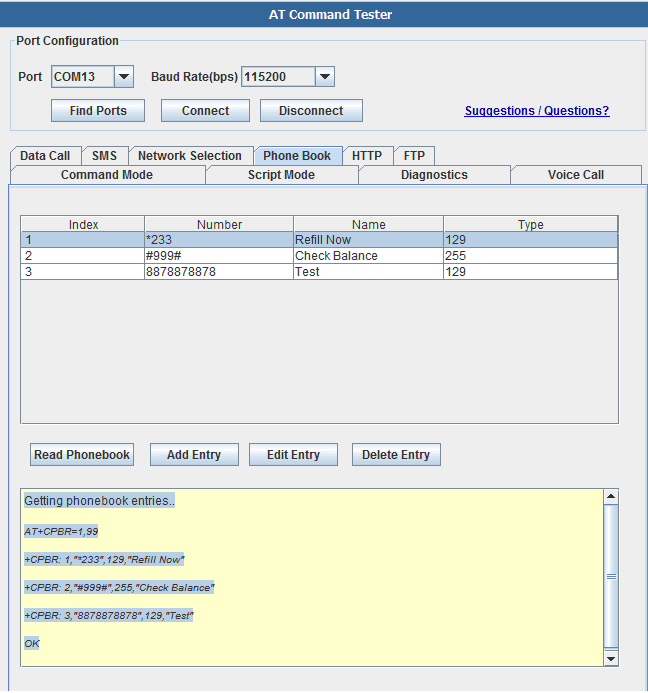
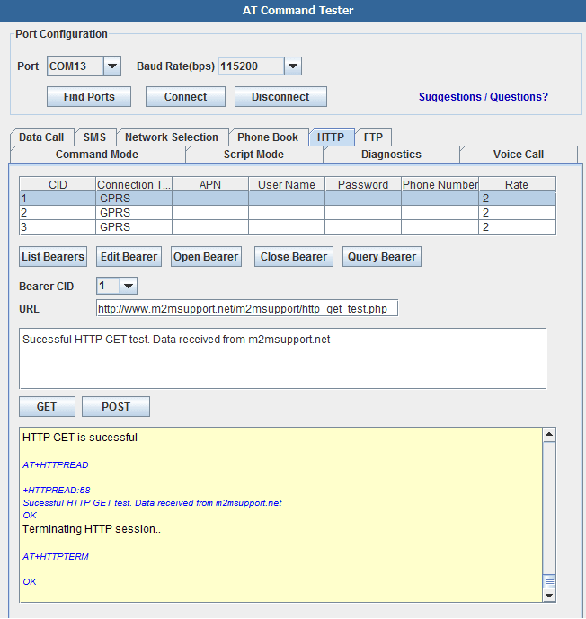
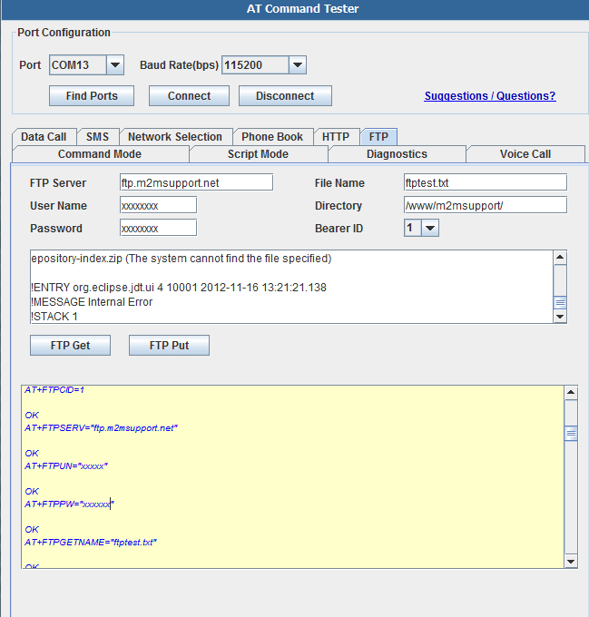

AT Command Tester is an online tool for testing AT commands and other module functionalities such as data call, voice call,HTTP, network registration, SMS, Phonebook, signal quality, SIM interface, device info etc.
AT Command Tester can be used with 2G Modules (GPRS/EDGE/1x) or 3G Modules (HSDPA/HSPA/EVDO) or 4G modules (LTE)
First select 'Find Ports' to search for avaialble ports. Then select the modem port and press 'Connect'. Once connected to the module, you can send AT commands from the 'Command Mode' tab
'. 
In script mode, you can send multiple AT commands at a same time as shown below. You can create your own script and save it on the local machine.Then load the script and execute.

To perform basic diagnostics on the SIM900 module, choose the 'Diagnostics' tab,

The diagnostics commands and the results are shown an below, AT+CGMI SIMCOM_Ltd OK
Manufacturer : SIMCOM_Ltd
AT+CGMM
SIMCOM_SIM900
OK
Model Number : SIMCOM_SIM900
Revision:1137B03SIM900M64_ST_MMS
OK
Revision : Revision:1137B03SIM900M64_ST_MMS
+CSQ: 8,0
OK
Signal level is -97 dbm. Signal condition is marginal.The signal strength range is -53 dbm (Excellent) to -109 dbm (Marginal).
+CREG: 0,1
OK
The device is registered in home network.
+CGACT: 1,0
+CGACT: 2,0
+CGACT: 3,0
OK
Device is NOT connected.
+COPS: 0,0,"T-Mobile"
OK
Device is currently on "T-Mobile" network.
+CPIN: READY OK
SIM is ready.
Voice Call with SIM900 Select the 'Voice Call' tab to test outgoing and incoming voice calls. The 'AT Command Tester' will check whether the device is registered before dialing the call,

The AT command sequence for outgoing call is shown below, Checking registration status... AT+CREG? +CREG: 0,1 OK
The device is registered in home network. Dialing number 858xxxxxxx
ATD858XXXXXXX;
OK
Voice call successfull Hanging up the call..
ATH
OK
Call sucessfully dis-connected..
+CNUM: "","1858XXXXXXX",129,7,4 OK
GPRS Data call with SIM900
To setup GPRS call with the SIM900 modem, select the 'Data Call' tab. Here you can get all the PDP context stored on the device. The PDP context has carrier APN and other information that are required to set up a GPRS call.

Here is the sequence of AT commands to set up data call
+CGDCONT: 1,"IP","epc.tmobile.com","0.0.0.0",0,0
+CGDCONT: 2,"IP","test5","0.0.0.0",0,0
+CGDCONT: 3,"IP","","0.0.0.0",0,0
OK
Checking registration status...
+CREG: 0,1
OK
The device is registered in home network.
Checking if device is already connected...
+CGACT: 1,0
+CGACT: 2,0
+CGACT: 3,0
OK
Attaching to network...
AT+CGATT=1
OK
Connecting...
OK
Connect Sucessful
SMS with SIM900 Select the 'SMS' to send SMS messages. You can also read and delete SMS messages stored on the SIM.

Here is the sequence of AT commands to send SMS message,
Checking registration status...
+CREG: 0,1
OK
The device is registered in home network.
AT+CMGS="858XXXXXXX"
> Test Message with AT Command Tester�
+CMGS: 19
OK
SMS Send successful
Network Selection Network selection enables the user to select the network that is available. Use the 'Network Selection' tab for this feature,

Here are the commands for Network Selection,
Finding Networks. Please wait..
+COPS: (2,"T-Mobile","T-Mobile","310260"),(1,"AT&T","AT&T","310410"),,(0,1,4),(0,1,2)
OK
Networks found
Phonebook
With the 'Phone Book' tab, you can add/delete/read phone book entries stored on the SIM,

Getting phonebook entries..
+CPBR: 1,"*233",129,"Refill Now"
+CPBR: 2,"#999#",255,"Check Balance"
+CPBR: 3,"8878878878",129,"Test"
OK
SIM900 HTTP
With the 'HTTP' tab, you can read the bearer profiles and test HTTP GET and HTTP POST,

Getting Bearer profiles..
AT+SAPBR=4,1
+SAPBR:
CONTYPE: GPRS
APN:
PHONENUM:
USER:
PWD:
RATE: 2
OK
AT+SAPBR=4,2
+SAPBR:
CONTYPE: GPRS
APN:
PHONENUM:
USER:
PWD:
RATE: 2
OK
AT+SAPBR=4,3
+SAPBR:
CONTYPE: GPRS
APN:
PHONENUM:
USER:
PWD:
RATE: 2
OK
Checking registration status...
+CREG: 0,1
OK
The device is registered in home network.
Querying bearer 1 .
AT+SAPBR=2,1
+SAPBR: 1,1,"162.184.222.162"
OK
Bearer 1 is Connected.IP address is "162.184.222.162"
Bearer 1 is Connected.
Initializing HTTP service...
OK
Error initializing HTTP service.
Setting up HTTP parameters..
AT+HTTPPARA="URL","http://www.m2msupport.net/m2msupport/http_get_test.php"
OK
AT+HTTPPARA="CID",1[[|]]
OK
AT+HTTPACTION=0
OK
HTTP GET is sucessful
+HTTPREAD:58
Sucessful HTTP GET test. Data received from m2msupport.net
OK
Terminating HTTP session..
OK
SIM900 FTP
FTP Get and Put with SIM900 module can be tested as shown below,

Checking registration status...
AT+CREG?
+CREG: 0,1
OK
The device is registered in home network.
Querying bearer 1 .
AT+SAPBR=2,1
+SAPBR: 1,1,"162.184.222.162"
OK
Bearer 1 is Connected.IP address is "162.184.222.162"
Bearer 1 is Connected.
Setting up FTP parameters..
OK
AT+FTPSERV="ftp.m2msupport.net"
OK
AT+FTPUN="xxxxxx"
OK
AT+FTPPW="xxxxxxx"
OK
AT+FTPGETNAME="ftptest.txt"
OK
AT+FTPGETPATH="/www/m2msupport/"
OK
AT+FTPGET=1
OK
+FTPGET:1,1
FTP session sucessfully started
AT+FTPGET=2,1024
+FTPGET:2,784
2-11-16 10:53:34.769 -----------------------------------------------
eclipse.buildId=M20120914-1800
java.version=1.6.0_16
java.vendor=Sun Microsystems Inc.
BootLoader constants: OS=win32, ARCH=x86, WS=win32, NL=en_US
Framework arguments: -product org.eclipse.epp.package.java.product
Command-line arguments: -os win32 -ws win32 -arch x86 -product org.eclipse.epp.package.java.product
!ENTRY org.eclipse.m2e.logback.appender 4 0 2012-11-16 12:11:54.493
!MESSAGE Unable to update index for central|http://repo.maven.apache.org/maven2: C:\Users\sgobi\.m2\repository\.cache\m2e\1.2.0\26522e0d83a422eed93329ece7565cfc\nexus-maven-repository-index.zip (The system cannot find the file specified)
!ENTRY org.eclipse.jdt.ui 4 10001 2012-11-16 13:21:21.138
!MESSAGE Internal Error
!STACK 1
OK
AT+FTPGET=2,1024
+FTPGET:2,0
OK
FTP data transfer is complete
+FTPGET:1,0
FTP session end